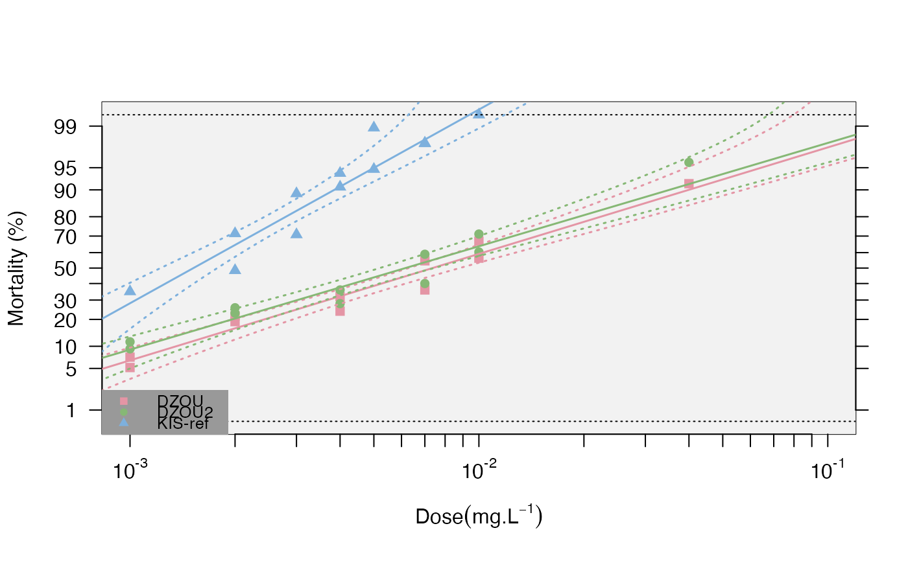

This function plots the probit-transformed mortalities (probit.trans()
function) as a function of the log10 of the dose, the regressions predicted
by the resist.ratio() function, with or without confidence levels, if the
dose-mortality responses are linear (option).
Arguments
- data
a data frame of probit transformed mortality data using the function
probit.trans()- strains
character. list of test strains to be plotted. If not provided, the function will plot all the strains in the data set.
- plot.conf
logical. Whether to plot the confidence intervals for each strain, default TRUE
- conf.level
numerical. The confidence interval to be plotted
- LD.value
numerical. Level of lethal dose to be tested. default=c(25,50,95)
- test.validity
logical. When TRUE (default), if a strain mortality-dose response fails the chi-square test for linearity in the
resist.ratio()function, no regression will be plotted, only the observed data.- legend.par
multi-type. Arguments to be passed to the legend as in
legend. default positionbottomleft. If no legend desired use FALSE. Note: if pch, lty, and col are passed to the plot, they don't need to be passed tolegend()- ...
parameters to be passed on to graphics for the plot (e.g. col, pch)
Examples
data(bioassay)
transd<-probit.trans(bioassay$assay2)
data<-transd$tr.data
strains<-levels(data$strain)
mort.plot(data,strains)
#> Warning: longer object length is not a multiple of shorter object length
#> Warning: longer object length is not a multiple of shorter object length
